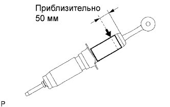

ПЕРЕДНИЙ АМОРТИЗАТОР > СНЯТИЕ С ЭКСПЛУАТАЦИИ |
| 1. ПОДГОТОВЬТЕ ЛЕВЫЙ ПЕРЕДНИЙ АМОРТИЗАТОР В СБОРЕ К УТИЛИЗАЦИИ |
|  |
Полностью выдвиньте шток поршня амортизатора и закрепите амортизатор на месте под углом в тисках или аналогичном инструменте.
С помощью дрели или аналогичного инструмента медленно просверлите отверстие на расстоянии примерно 50 мм (1,97 дюйма) от верхнего конца амортизатора и выпустите находящийся внутри него газ.